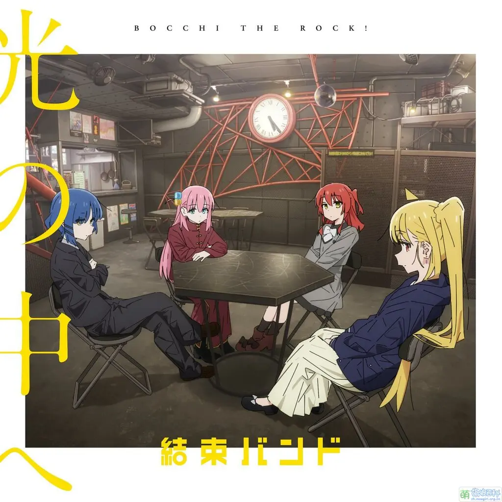

音乐专辑
「結束バンド」的音乐作品，每一首都充满了青春的热情与成长的烦恼，让我们一起沉浸在音乐的海洋中吧！
結束バンド

青春コンプレックス
TV动画《孤独摇滚！》片头曲
3:25
Distortion!!
TV动画《孤独摇滚！》插入曲
3:20
ひみつ基地
TV动画《孤独摇滚！》插入曲
4:07
あのバンド
TV动画《孤独摇滚！》插入曲
3:33
カラカラ
TV动画《孤独摇滚！》片尾曲
3:43
专辑试听
0:00
0:00
🔊
专辑简介
「結束バンド」的首张专辑，收录了TV动画《孤独摇滚！》中的所有歌曲。专辑完美展现了乐队成员的个性与成长，从青春的烦恼到音乐的热情，每一首歌都充满了真挚的情感。这张专辑不仅是动画的配乐，更是乐队成员们音乐旅程的真实写照。
光の中へ
通过索尼音乐发行 · 在乐队"恒星"演唱会次日推出

光の中へ
主打歌曲 · 日语摇滚风格
4:15
青い春と西の空
日语摇滚风格
3:52
光の中へ (Instrumental)
伴奏版本
4:15
青い春と西の空 (Instrumental)
伴奏版本
3:52
专辑试听
0:00
0:00
🔊
专辑亮点
这张专辑《光の中へ》于2023年5月22日通过索尼音乐正式发行，在乐队"恒星"演唱会的次日推出。专辑收录了《光の中へ》和《青い春と西の空》两首全新的日语摇滚风格歌曲，以及它们对应的伴奏版本，共4首曲目。专辑名称"光の中へ"（向着光芒）象征着乐队成员们突破自我，向着更广阔的音乐舞台前进的决心与希望。这张专辑展现了乐队在音乐创作上的成熟与进步，是他们音乐旅程中的重要里程碑。